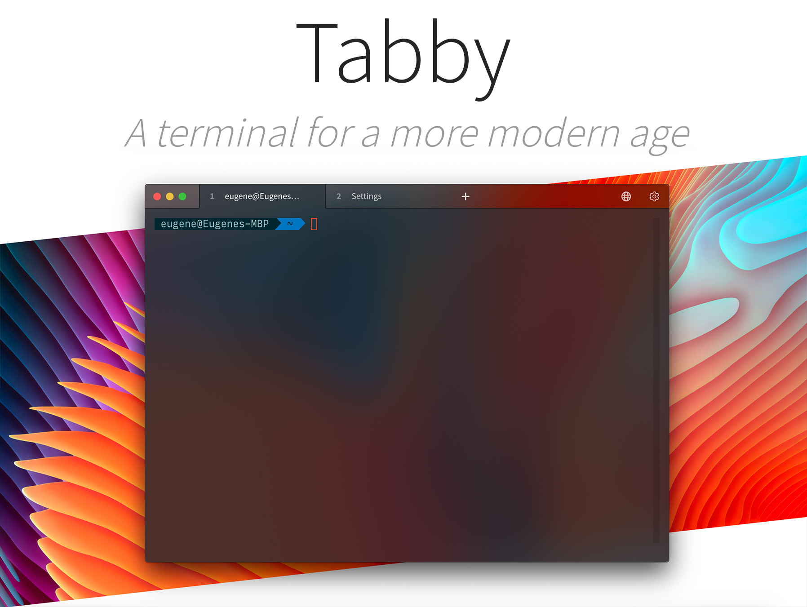
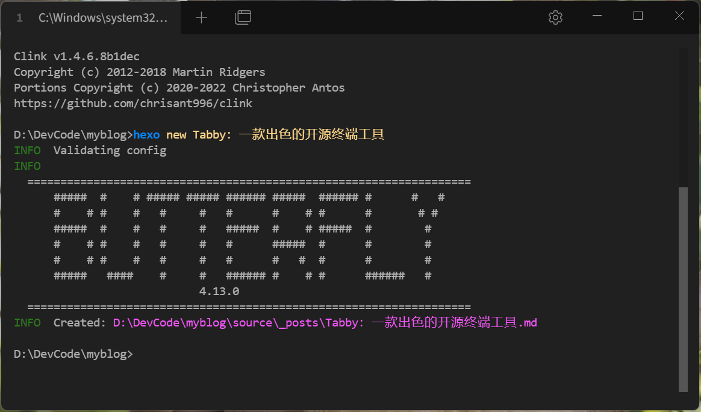

Tabby：一款出色的开源终端工具
Tabby
Tabby - a terminal for a more modern age，是一种现代化、轻量级的终端（terminal）应用程序。它旨在提供更好的用户体验和可扩展性，适用于开发者、系统管理员和其他需要频繁使用终端的用户，帮助他们更高效地管理和操作终端任务，支持Windows、macOS和Linux操作系统，支持文件快速传输……最重要的是，长在了年轻人的审美上面！
安装Tabby
直接打开Tabby官网，点击「download」按钮就可以跳转到下载页面，Windows用户可以直接找到setup-x64.exe下载安装。
安装完成后你就拥有了一个炫酷的终端软件
配置Tabby
用户可以根据自己的喜好自定义外观和行为，包括主题、配色方案、字体等
语言设置
打开Tabby，找到右上角齿轮图标，打开设置，在Application settings中的Language中选择中文即可
配色方案
在左侧配色方案可以选着自己想要的主题，暗色 or 亮色，有丰富的配色方案可供选择
插件下载
左侧插件中提供了Tabby的插件下载
- docker - 连接到 Docker 容器
- title-control - 允许通过提供要删除的前缀、后缀和/或字符串来修改终端选项卡的标题
- quick-cmds - 快速向一个或所有终端选项卡发送命令
- save-output - 将终端输出记录到文件中

SSH连接
SSH连接是我们使用终端最常用的功能，可以方便我们操作Linux系统
找到设置中左侧的配置和连接，新建，新配置，选择SSH连接为模板
输入名称，主机IP，用户名和密码，点击保存即可完成自定义配置
- 点击某个配置启动按钮，即可建立连接
- 这样你就拥有了一个好看的终端，可以操作你的Linux系统
- 当然，你也可以做到分屏效果，同时开多个终端，在标签处（名字）右键，点击拆分即可，同时操作更多
SFTP文件传输
在右上角的SFTP处可以打开SFTP窗口，可以创建文件夹和上传文件，也支持直接将文件拖拽入窗口实现上传（记得先去到目标文件夹哦！），双击某个文件可以对该文件进行下载或者鼠标右键点击本地编辑。
cmd使用
在每次重新打开系统cmd的时候，没有历史记录，我都要不断地重复输入，很繁琐
并且某些时候你还需要去到指定的文件夹，这时设置cmd的工作目录，再将该配置保存起来，下次点击配置运行即可

Tabby可以帮助我们记住历史命令，即使软件被关闭，可以一键➡补全，减去繁琐的输入
功能与cmd完全一样，还有Power shell，Git bash等等
双 手 合 十 成 为 自 己 的 神
自 己 所 信 念 的 即 是 信 仰

微 信 号 ： L I J J J W E I
Q Q 号 ： 2 8 4 8 5 2 7 4 8 5